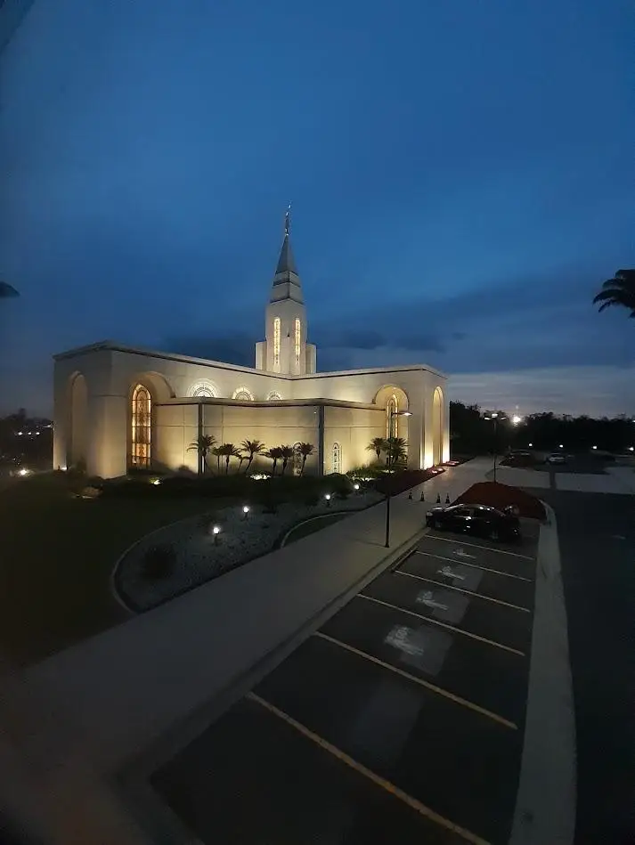

Interior de São Paulo
Desde 1774
Campinas em dados
- País
- Brasil
- Estado
- São Paulo
- População
- 1,14 milhão (Censo 2022)
- Área
- 794,6 km²
- Fundação
- 14 de julho de 1774
Clima
- Condição
- Parcialmente nublado
- Temperatura
- 8 °C
- Velocidade do vento
- 12 km/h
- Sensação térmica
- —
Um pouco sobre a cidade
Tradição e futuro lado a lado
Campinas combina a energia de um importante polo de inovação com parques, cultura e uma história que atravessa séculos. Entre seus lugares marcantes estão a Lagoa do Taquaral, o Mercado Municipal e o distrito de Joaquim Egídio, conhecido por suas paisagens e trilhas.